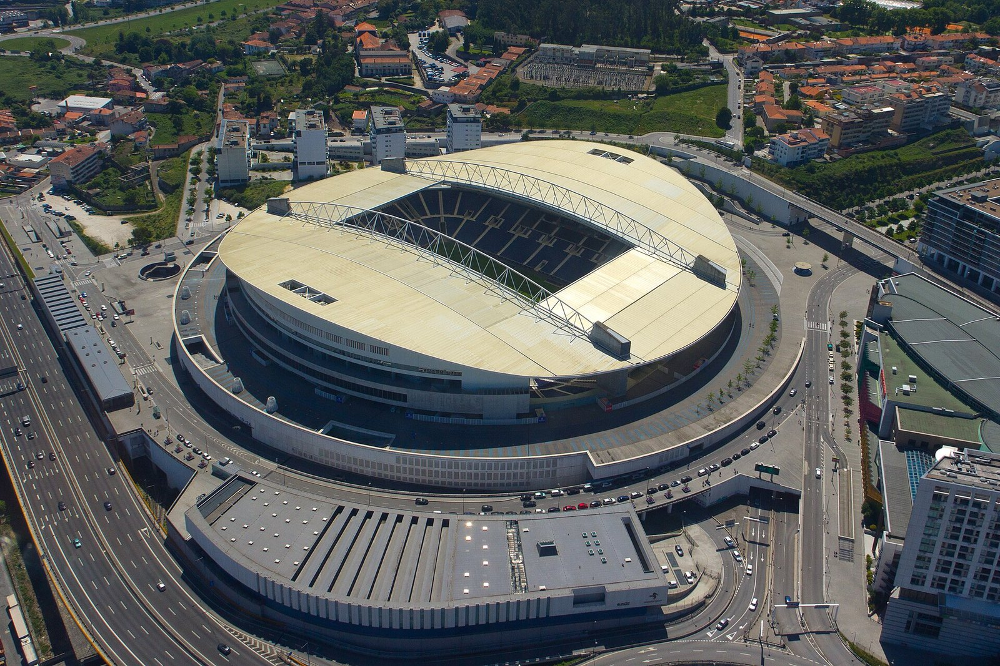
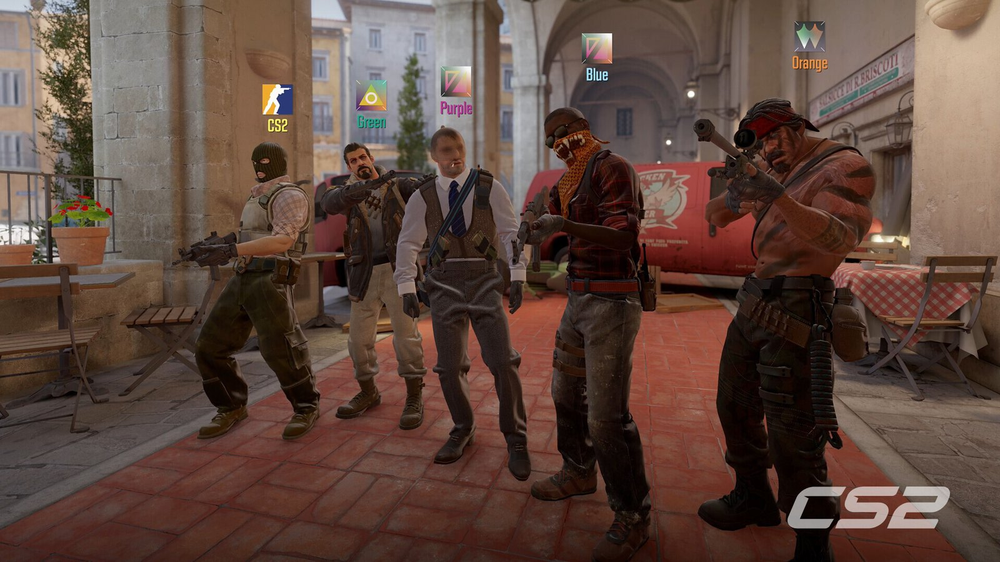
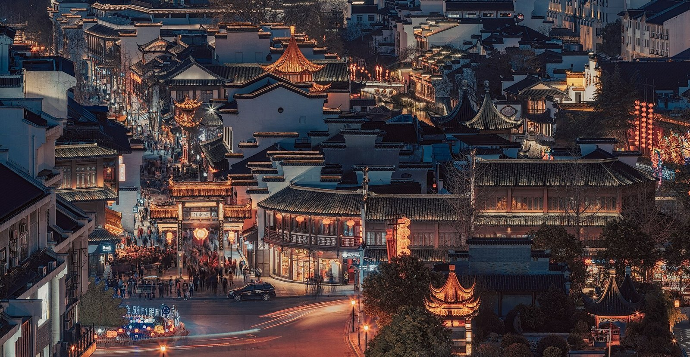
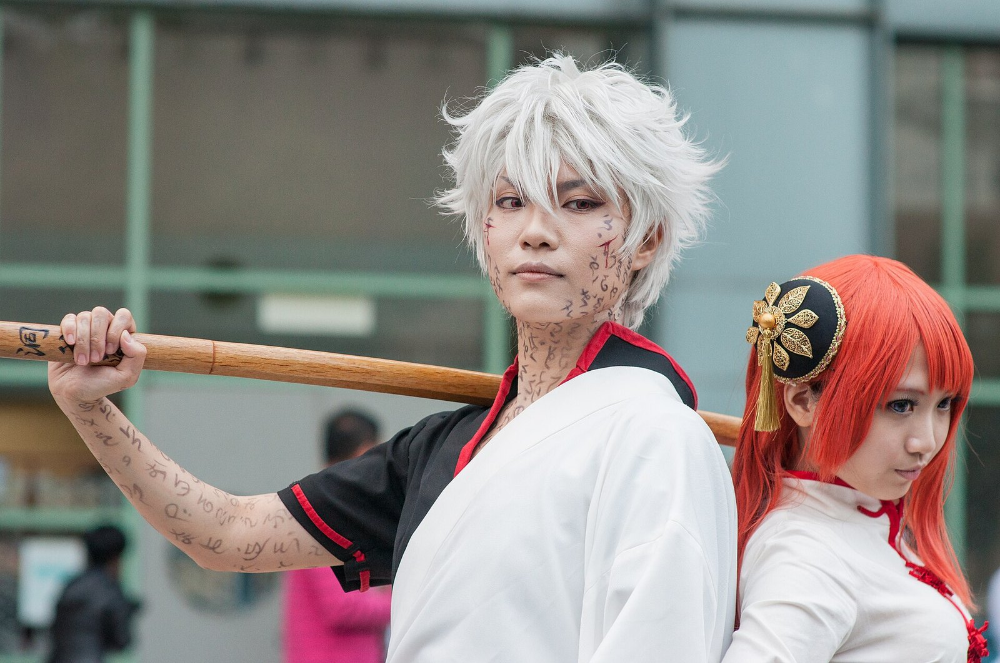

我的兴趣 be like：
大家好，我是顾晟格，学号后三位是 190。这个网页没啥特别的，就是把我平时喜欢的东西整理了一下，一共五个：足球、游戏、老家南京、动漫，还有科技。点下面的标题能进对应的页面，每个页面都能点回这儿。

足球：2019 年那场欧国联
葡萄牙拿了第一届欧洲国家联赛的冠军，决赛 1:0 赢的荷兰。

游戏：CS2
从 CS:GO 打到 CS2，玩了挺久的一个游戏。

家乡：南京
夫子庙、秦淮河，还有我最爱的鸭血粉丝汤和盐水鸭。

动漫：银魂，万事屋
银时、新八、神乐三个人，什么活都接。

科技：特斯拉
长得像一块金属板的 Cybertruck，还有 Roadster 的「喷气」推进器。